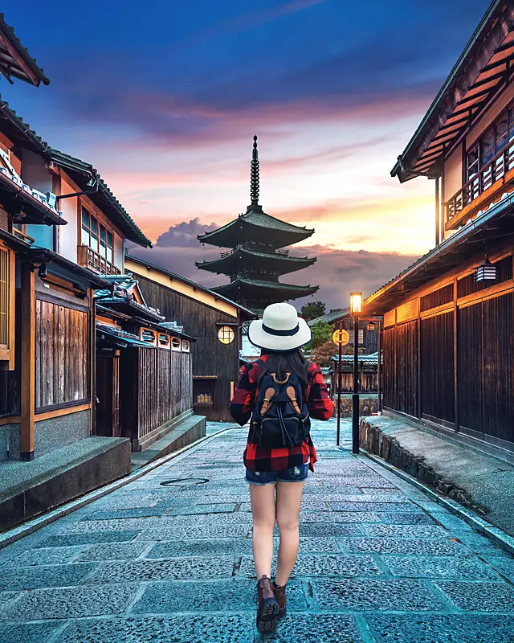

The scenic
way round
Yorimichi (寄り道) is the Japanese word for a detour — the side street you take on the way home because it is the better street. We run Japan tours that go that way on purpose.
Two people and
a spreadsheet
Yorimichi started in 2014 with one tour: ten days, Tokyo to Osaka, twelve seats, sold from a desk in a shared office on Neil Road. Mei Lin had spent four years leading coach tours across Japan for a large operator and had a list of everything she would do differently. Fewer people. No headsets. Reach the temples when they open. Give people the afternoon.
Twelve years on, the list is still the product. We run eight tours, all of them to Japan, all of them for groups of twelve or fewer, all of them with the flight from Changi in the price. In 2025 we took 612 travellers on 51 departures, and 96% of the ones who answered the survey said they would come again. About a third of every year’s travellers already have.
We do not sell anything we have not walked. Every itinerary is re-walked by a tour leader each year before the first departure, timings checked against the new rail timetable, every ryokan re-visited. When a temple starts charging, or a market moves, the page changes the same week.

Who leads the tours
Mei Lin Tan
Founder · tour leaderTwelve years leading in Japan, before that four with a coach operator. Leads the Golden Route and Sakura Season herself, and still does the temple timings by hand. English, Mandarin, Japanese (JLPT N1).
Kenji Arai
Japan operations · tour leaderBorn in Takayama, lived in Singapore since 2016. Books every ryokan and every reserved Shinkansen seat, and leads Snow Country and the Onsen retreat in winter. Knows which inn has the quieter bath.
Daniel Wee
Tour leader · plannerJoined in 2019 from a Kyoto hostel he ran for three years. Leads Kyoto in Autumn, Hiroshima and Tokyo After Dark, and answers the phone at the office on Wednesdays. Ask him about the sushi counter.
The rules we
keep
- Twelve travellers, always. We have turned down a thirteenth booking on a full tour more times than we can count. The number is the product.
- One tour leader from Changi to Changi, and a licensed local guide for the day in Kyoto, Hiroshima and Nara.
- Luggage is forwarded between cities by takkyubin, so no one drags a suitcase through Shinjuku station. You carry a day bag.
- Headline sights at opening time; most afternoons free, with a written list from the guide and a phone that answers.
- One ryokan night on every tour that leaves the cities, with a proper kaiseki dinner and an explanation of the bath beforehand.
- Prices are the whole price. If a fee appears that we did not list, we pay it.
The paperwork
Yorimichi Travel Pte. Ltd., UEN 201412876K, 24 Duxton Hill #02-04, Singapore 089607. Booking conditions are sent with every reservation and are available at the office.
The office is
open six days
Duxton Hill, second floor, above the coffee place. Six minutes from Tanjong Pagar MRT, exit A. Bring your dates and your questions; we will bring the maps.
- Office24 Duxton Hill #02-04
Singapore 089607 - HoursMon–Fri 10:00–19:00
Sat 10:00–16:00 · Sun & PH closed - Phone+65 6221 4870
- Emailhello@yorimichi.sg